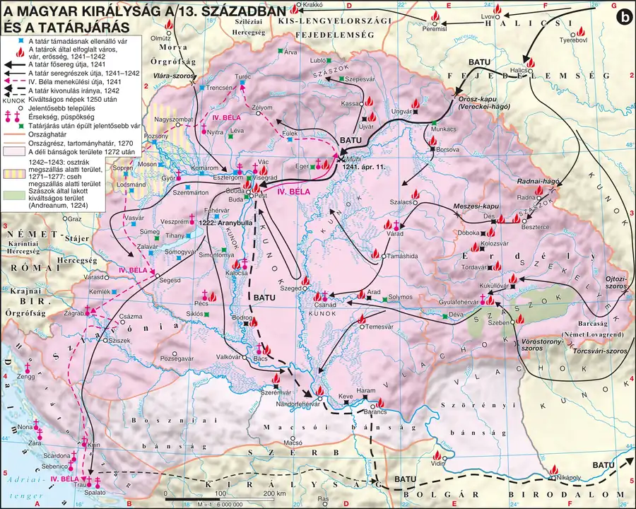

Magyarország a XIII. század elején — II. András „új intézkedései”
Be tudod mutatni a királyi birtokrendszer válságát III. Béla utáni eladományozás nyomán, és el tudod magyarázni II. András birtok- és pénzügyi politikáját, valamint az ebből fakadó társadalmi elégedetlenséget.
A birtokrendszer válsága
III. Béla (1172–1196) idején Magyarország megerősödött, ugyanakkor megkezdődött a királyi birtokok fokozott eladományozása — ő volt az első uralkodó, aki egy egész vármegyényi területet adományozott el egyszerre. Ez a politika elindította a királyi földbirtokokból származó, természetben beszedett domaniális jövedelmek csökkenését, amit egyre nagyobb hangsúllyal a pénzben szedett, királyi jogon járó regálé jövedelmek (elsősorban a pénzváltásból származó „kamara haszna”) ellensúlyoztak.
III. Béla halála után idősebb fia, Imre (1196–1204) került trónra; halála után öccse, II. András (1205–1235) foglalta el a trónt a kiskorú (III.) László mellőzésével. A belpolitikai harcokban tovább folytatódott, sőt felgyorsult a birtokeladományozás.
Az „új intézkedések” politikája
II. András hatalomra kerülve meghirdette az „új intézkedések” politikáját, amelyet a király gazdasági ügyeivel foglalkozó új tisztségviselő, a tárnokmester valósított meg. András tovább növelte az eladományozás ütemét — saját szavai szerint „az adományozás legjobb mértéke a mértéktelenség”. A megadományozottak a múltbeli szolgálataikért, nem a jövőbeni hűségükért kaptak birtokot, tehát ezek nem hűbéri jellegű adományok voltak: nem kötötte őket sem hivatalviseléshez, sem katonáskodáshoz.
A nagy, egész vármegyékre kiterjedő eladományozás jelentősen csökkentette a király domaniális jövedelmeit, ezért II. András új adófajtákat vezetett be (rendkívüli adó, nyolcvanadvám), évente többször váltott pénzt egyre csökkenő nemesfémtartalommal (pénzrontás), és bérbe adott bizonyos királyi jövedelmeket (pénzverés, sókereskedelem, vámszedés) — ezek bérlői gyakran zsidók és izmaeliták voltak. A király így is állandó pénzszűkében volt, mert külpolitikai vállalkozásai (halicsi hadjárat, keresztes hadjárat) is sokba kerültek.
Elégedetlenség és Gertrúd meggyilkolása
A birtokeladományozások miatt többféle csoport is elégedetlenkedett. Az Imre-párti főurak nemhogy nem kaptak újabb birtokokat, de egyes esetekben vissza is vették tőlük a korábbiakat — különösen sérelmezték az idegeneknek, András felesége, Gertrúd meráni rokonainak juttatott birtokokat. A királyi szerviensek (akik katonai szolgálatot teljesítettek a király zászlaja alatt, és csak a királyi bíráskodás alá tartoztak) a nagy eladományozások révén magánföldesúri függésbe kerültek, elveszítve kiváltságaikat — hasonló sorsra jutottak a várjobbágyok is. Az elégedetlenség 1213-ban a Pilis hegységben Gertrúd meggyilkolásához vezetett (az összeesküvés vezetői között Bánk bán neve is szerepel) — jellemző a királyi hatalom gyengeségére, hogy csak néhány összeesküvőt büntettek meg.
Két, egymást erősítő probléma áll a válság hátterében: hogyan teremtsék elő a királyi udvar és a hadjáratok anyagi fedezetét (megoldás: regálék, pénzrontás), és hogyan érvényesüljön a királyi akarat az országban, ha a hadsereg alapja már a bárók magánhadserege. Ez a kettős probléma vezet egyenesen az Aranybullához.
Kötelező adatok
| Fogalmak | Személyek | Emelt szinten |
|---|---|---|
| szerviens | II. András | Edomaniális és regálé jövedelem, pénzrontás |
1. forrás
A király azt mondta udvarában: az adományozás legjobb mértéke a mértéktelenség. Ennek megfelelően nemcsak udvarbirtokokat, hanem királyi várakat és a hozzájuk tartozó birtokokat is bőkezűen szétosztotta hívei között — nem azért, hogy jövőbeli hűséges szolgálatukat lekösse, hanem korábbi érdemeik jutalmául. A megadományozottak semmilyen hivatalviselési vagy katonáskodási kötelezettséggel nem tartoztak a kapott birtok fejében.
- Milyen elvet fogalmaz meg a király az idézett mondatban?
- Miért nem tekinthetők ezek az adományok hűbéri jellegűnek?
- Milyen hosszú távú következménnyel járhatott az, hogy a birtokadomány nem volt semmilyen kötelezettséghez kötve?
Ellenőrző feladatok
Az Aranybulla (1222)
Be tudod mutatni az Aranybulla kiadásának körülményeit, fel tudod sorolni legfontosabb rendelkezéseit, és ismered az öt sarkalatos nemesi jogot, valamint az ellenállási záradék jelentőségét.
A kiadás körülményei
1222-ben az elégedetlenkedő, Imre-párti főurak — a szerviensekre és várjobbágyokra támaszkodó mozgalommal — palotaforradalommal elmozdították az „új intézkedések” híveit, és a székesfehérvári törvénylátó napon II. Andrást az érdekeiket biztosító oklevél kiadására kényszerítették. Az oklevelet aranypecsétjéről nevezték Aranybullának.
Az Aranybulla legfontosabb rendelkezései
A 31 cikkelyből álló oklevél elsősorban az elégedetlenkedők sérelmeit orvosolta: megtiltotta egész vármegyék eladományozását és a becsületes szolgálattal szerzett birtokok önkényes elvételét, kivétel nélkül megtiltotta a tisztséghalmozást, megtiltotta idegenek számára a méltóság- és birtokadományt, kimondta, hogy kamaraispán, pénzverő, sótiszt csak az ország nemesei közül kerülhet ki, és előírta, hogy az új pénz egy évig legyen forgalomban (a pénzrontás fékezésére).
A cikkelyek több mint harmada — 11 pont — a szerviensekkel foglalkozott; ezek adták a mozgalom fő erejét, és öt olyan jogot kaptak, amelyek később a nemesi előjogok (sarkalatos nemesi jogok) alapját képezték:
| Sarkalatos jog | Tartalma |
|---|---|
| Adómentesség | a szervienseket nem terhelte rendes királyi adó |
| Örökíthetőség | birtokukat szabadon örökíthették, adományozhatták (fiú utód nélkül a birtok negyede a leányra száll) |
| Korlátozott hadkötelezettség | csak védekező háborúban kötelesek hadba vonulni; az országhatáron kívül csak a király költségén |
| Birtokimmunitás | a szerviens engedélye nélkül még a király sem szállhat meg a birtokán |
| Perbeli védelem | csak per és bírói eljárás alapján fogható el, jogosult megjelenni a székesfehérvári törvénylátó napon |
Az Aranybulla a várjobbágyokkal és várnépekkel kevesebbet foglalkozott, de megerősítette jogaikat. Az egyházzal szemben korlátozóan lépett fel: a parasztságnak a tizedet természetben kellett fizetnie (a király ezt saját részére kívánta beszedetni), és a sólerakatokat csak királyi raktárral rendelkező településeken engedélyezte — ezzel távol tartva az egyházat a sókereskedelemtől.
A bulla leghíresebb pontja a 31. cikkely, az ellenállási záradék, amely feljogosította a világi előkelőket (bárókat) és a főpapokat az ellenállásra, amennyiben a király megszegi az oklevélben foglaltakat.
Az Aranybulla sorsa
II. András nem nagyon tartotta be az oklevél pontjait: hívei hamarosan — ha lassabb ütemben is — újra pozícióba kerültek, és a birtokadományozás folytatódott. Az egyház viszont elérte, hogy az 1231-es megújításban az érdekeit sértő rendelkezések kikerüljenek, majd 1233-ban, a beregi egyezményben további engedményeket csikart ki: teljes adómentességet, az izmaeliták és zsidók visszaszorítását, valamint a sókereskedelem jogának visszaszerzését.
Az Aranybullát gyakran tévesen az angol Magna Chartával azonosítják teljesen egyenrangú „alkotmányos” dokumentumként. Fontos árnyalás: az Aranybulla elsősorban a szerviensek érdekeit védte a bárókkal szemben, és II. András a gyakorlatban alig tartotta be — ez a fajta kritikus, forráskritikai megjegyzés jó pontot ér a szóbelin.
Kötelező adatok
| Fogalmak | Személyek | Kronológia, topográfia |
|---|---|---|
| ellenállási záradék, sarkalatos nemesi jogok, szászok; Ekirályi és nemesi vármegye | II. András, Szent Erzsébet | 1222: az Aranybulla; ESzászföld, Nagyszeben |
2. forrás
A király kinyilvánítja, hogy Szent István szabadsága óta némely uralkodók önkényesen csorbították az ország nemeseinek jogait, ezért az ország főemberei és nemesei kérésére megújítja és írásba foglalja azokat. Kimondja: nemest bírói ítélet nélkül elfogni vagy javaitól megfosztani nem szabad. Ha pedig ő maga vagy utódai bármely pontját megszegnék ennek az oklevélnek, a jelenlévő és a jövendő püspököknek és báróknak egyaránt szabadságukban álljon mind közösen, mind egyenként, hűtlenség vétke nélkül ellenállni és ellentmondani mindörökre.
- Milyen indokkal magyarázza a király az oklevél kiadását?
- Melyik sarkalatos nemesi jogra utal a „bírói ítélet nélkül nem fogható el” rendelkezés?
- Fogalmazza meg saját szavaival az idézett záró rendelkezés (az ellenállási záradék) lényegét!
Ellenőrző feladatok
IV. Béla politikája a tatárjárás előtt
Be tudod mutatni IV. Béla restaurációs törekvéseit, a kunok befogadásának körülményeit, és ismered Julianus barát útját és a mongol fenyegetés első jeleit.
A restauráció kísérlete
IV. Béla (1235–1270), aki ifjabb királyként élesen szemben állt apja, II. András birtokeladományozáson és regálé-növelésen nyugvó politikájával, hatalomra kerülve leszámolt apja híveivel — például Ampod fia Dénes egykori tárnokmestert megvakíttatta —, saját embereit ültette a királyi tanácsba, és megpróbálkozott a királyi birtokrendszer restaurációjával: vagyis a korábban eladományozott birtokok visszavételével, nemcsak a báróktól, hanem a szerviensektől és a várjobbágyoktól is. Ezzel a vezető réteg mindegyik csoportjával szembekerült.
Fokozta az ellenszenvet néhány, formálisan a királyi tekintélyt erősítő intézkedése is: a királyi tanácsban elégettette a bárók székeit, így a főpapok és hercegek kivételével senki sem ülhetett le a király jelenlétében; míg korábban a bárók előzetes bejelentés nélkül a király elé járulhattak, Béla ezt kérelemhez kötötte.
Julianus barát és a kunok befogadása
1235–1236-ban Julianus domonkos-rendi szerzetes a keleten maradt magyarok felkutatására indult, és 1236-ban a Volga mellett rájuk is talált — ugyanakkor hírt hozott a fenyegető tatár (mongol) veszedelemről is. 1238-ban Batu kán meghódolásra szólította fel IV. Bélát, aki nem engedelmeskedett.
1239-ben IV. Béla befogadta az országba a tatárok elől menekülő nomád kunokat Kötöny fejedelem vezetésével — ezzel több ezer, kizárólag neki hűséges harcost nyert, ám nem számolt a nomád kunok és a letelepült magyar lakosság között óhatatlanul kialakuló feszültségekkel: a kunok vándorló életmódja, legelésző állatai sok kárt okoztak a földesurak birtokain. Mindezen intézkedések — a restauráció és a kunok befogadása egyaránt — a bárók komoly ellenállását váltották ki éppen a mongol támadás előestéjén, amikor az országnak minden erejére szüksége lett volna az egységre.
Ez a modul a legfontosabb ok-okozati híd a témakörben: IV. Béla éppen a legrosszabb pillanatban — a mongol fenyegetés árnyékában — idegenítette el magától a bárókat két külön intézkedésével (birtok-visszavétel, kun-befogadás). Ez magyarázza, miért állt az ország megosztottan, belső feszültségekkel terhelve a tatárjárás elé.
Kötelező adatok
| Fogalmak | Személyek | Kronológia |
|---|---|---|
| kunok, tatárok/mongolok | IV. Béla | E1235–1270: IV. Béla uralkodása |
3. forrás
Batu kán levelében közli a magyar királlyal: tudomására jutott, hogy a kunokat, az ő szolgáit befogadta országába. Követeli, hogy a kunokat ne védelmezze, mert ők neki alávetett néppé lettek, és aki menedéket ad nekik, azt is ellenségének tekinti. Felszólítja Bélát, hódoljon meg neki, mert ellenkező esetben olyan pusztítást hoz országára, amelyet elviselni nem lesz képes.
- Mit követel Batu kán a magyar királytól a forrás szerint?
- Milyen alapvető különbségre utal a kán a kunok és a magyarok viszonyát illetően?
- Milyen fenyegetést fogalmaz meg a levél, ha a király nem hódol meg?
Ellenőrző feladatok
A tatárjárás (1241–1242)
Be tudod mutatni a mongol támadás három irányát és a muhi csata lefolyását, ismered a vereség okait, és tudod értékelni a pusztítás valós mértékét a Rogerius-féle beszámoló tükrében.
A támadás
Amikor a tatárok Kijevet is elfoglalták (1240), Béla segítségért fordult Európa keresztény uralkodóihoz — azokat azonban egymással folytatott küzdelmeik kötötték le, és nem érezték fenyegetve saját országukat; egyedül az osztrák őrgróf érkezett meg, kisebb erőkkel. A király megkésve, 1240 decemberében, Kijev elestének hírére hordatta körbe a véres kardot az országban, és csak ekkor kezdődtek meg az erődítési munkák a keleti határokon.
1241-ben a tatárok három irányból törtek Magyarországra: a Vereckei-hágón érkező, mintegy 60 000 fős fősereget maga Batu kán vezette, miután 1241. március 12-én elsöpörte Tomaj Dénes nádor seregét; a támadás déli szárnya Kadán és Bödzsek vezetésével Erdélybe tört be, míg az északi szárny Orda és Bajdar vezetésével Lengyelország és Morvaország felől, később érkezett az országba. A tatárok nagyon gyorsan vonultak át az alföldi területeken, ahol nem voltak várak és erődített városok, amelyek megállíthatták volna őket.
A gyors előretörést a magyar főurak egy része a kunok árulásának tudta be: Pesten a tömeg meggyilkolta Kötöny kun fejedelmet és kíséretét. Válaszul a kunok dél felé vonulva, rabolva-pusztítva hagyták el az országot — ezzel tovább gyengítve a magyar védelmet, hiszen a Béla számára megbízható kun harcosok elvesztek.
A muhi csata
A döntő összecsapásra a Sajó torkolatához közel, Muhinál került sor 1241. április 10–11-én: a tatár előőrsök Pestig csalták, majd a Sajóig vonták a Pest alatt összegyűlt magyar sereget, amely szekértáborba zárkózva táborozott. A tatárok megsemmisítő vereséget mértek a magyar hadseregre — sok katona mellett odaveszett az ország vezető rétegének jelentős része is. A király maga is csak nehezen, kísérete önfeláldozása árán tudott elmenekülni a harcmezőről; előbb osztrák földre menekült, de az osztrák herceg — kihasználva Béla szorult helyzetét — elvette kincseit, és néhány vármegye átadására kényszerítette. Végül IV. Béla Dalmáciába, Trau várába menekült.
| A vereség lehetséges okai |
|---|
| Hadvezetési és stratégiai hibák: a mozgósítás késlekedése, a muhi terepválasztás, a szekértábor kialakítása |
| Éles ellentét a király és a főurak között (a restauráció és a kun-befogadás nyomán) |
| Hiányoztak a várak és a fallal körülvett városok az Alföldön |
| EAlapvető ok: a várispánságokon alapuló, de a nagy birtokadományozások miatt már felbomlóban lévő királyi hadszervezet nem lehetett elégséges a védelemhez |
A pusztítás mértéke és a tatárok kivonulása
A vereség és a király távozása nyomán az ország védtelenül állt a tatár hadak előtt — a nép mocsarakban, erdőkben keresett menedéket. A jól megerősített kővárak (Trencsén, Pozsony, Komárom, Fülek) menedéket nyújtottak az oda menekülőknek. A tél beálltával a tatárok a befagyott Dunán át a Dunántúlra törtek, ahol azonban a legfontosabb erősségeket (Esztergom, Fehérvár, Pannonhalma) bevenni nem tudták. 1242 márciusában a tatárok — foglyok tömegét magukkal hurcolva — váratlanul kivonultak az országból.
A kivonulás okára négy magyarázat szokott felmerülni: a legvalószínűbb, hogy Ögödej nagykán meghalt, és Batu kánnak sietnie kellett haza az új nagykán megválasztására; kevésbé valószínű, hogy a magyar ellenállás késztette erre őket; elképzelhető, hogy eleve csak az ország haderejének felmérése és megroppantása volt a cél, nem a tartós megszállás; és felmerül az utánpótlási vonalak elnyúlása is, bár ez utóbbi kevésbé meggyőző, mivel a tatárok ellátásukat fosztogatásból oldották meg.
A pusztítást Rogerius váradi kanonok örökítette meg Siralmas ének (Carmen miserabile) című munkájában — leírása sok szörnyűséget tartalmaz. A történészek többsége 15–20%-os emberveszteséget valószínűsít (ez így is mintegy félmillió halottat jelent), a korábban feltételezett 20–50%-os arány túlzó: a Magyar Királyság ugyanis nem sokkal a tatárjárás után dél és nyugat felé területszerző politikába kezdett, amire ekkora emberveszteség után nem lett volna képes.
Kötelező adatok
| Fogalmak | Személyek | Kronológia, topográfia |
|---|---|---|
| kunok, tatárok/mongolok | IV. Béla, Szent Margit | 1241–1242: a tatárjárás Buda, Muhi |
4. forrás
A Magyar Királyság a 13. században és a tatárjárás
A mongol támadás útvonalai, a fontosabb ütközetek és a pusztítás területi összefüggései követhetők.

A szerző leírja, hogy a tatárok elől a nép a mocsarakba és az erdőkbe menekült, sokan napokig étlen-szomjan bujkáltak. Akiket elfogtak, azokat vagy megölték, vagy rabszolgaként elhurcolták. A falvak elnéptelenedtek, a földeket nem tudták megművelni, ezért éhínség sújtotta a túlélőket is. A szerző szerint volt olyan hely, ahol az anya gyermekével együtt egy kemencébe bújt menedéket keresve, de az égő házban lelte halálát.
- Milyen módon próbált a lakosság menekülni a tatárok elől a forrás szerint?
- Milyen közvetett (nem katonai) következménye volt a pusztításnak, amelyet a forrás megemlít?
- Miért kell forráskritikával kezelni Rogerius leírását, ha a pusztítás pontos mértékét akarjuk megbecsülni? Vesse össze a tankönyvi becsléssel!
Ellenőrző feladatok
Az ország újjáépítése — a „második honalapító”
Be tudod mutatni IV. Béla tatárjárás utáni politikájának fordulatát: a várépítést, a feltételes birtokadományozást, a kunok visszatelepítését és a betelepítési politikát.
Politikai fordulat
A tatárjárás pusztítása és a Muhinál elszenvedett súlyos vereség hatására IV. Béla szakított korábbi politikájával: a birtok-visszavételek helyett immár a megbékélést kereste az előkelőkkel, és jelentős adományokat juttatott híveinek. Mivel tartott a tatárok újabb támadásától, a korábban tiltott várépítés most feltétele lett a birtokadományoknak — minél több kővár védje a lakosságot. A király maga is építtetett kővárat Budán; ezzel indult meg Buda várossá alakulása.
Az új politika alapelve: az adományt katonaállításhoz kötötte, megteremtve ezzel a magánhadseregekre épülő banderiális hadszervezet alapjait. Nagyarányú nemesítésbe kezdett: a szerviensek mellett sok várjobbágy is nemesi jogokat kapott, ezzel a királyi várszervezet végleg bomlásnak indult. Fejlesztette a hadsereget is: megnövelte a nehézlovasság létszámát, és besenyőkből, kunokból, jászokból könnyűlovas segédcsapatokat szervezett.
Betelepítés és népességpótlás
IV. Béla szorgalmazta a telepítéseket: újra behívta a kunokat az országba, és az Alföld belső, néptelen területein adott nekik földeket (innen a Nagykunság és a Kiskunság elnevezés) — ekkor kezdtek betelepülni a jászok is (Jászság). A kunok és a jászok — a korábbi nomád népekhez hasonlóan — egy-két évszázad alatt beolvadtak a magyarságba.
Magyarországon már a tatárjárás előtt is éltek más népek: az északi hegyekben szlávok (a későbbi szlovákok ősei), a Szepességben és Dél-Erdélyben szászok. A pusztítás és a betelepítés együttesen hatott az ország etnikai összetételére; a következő évszázadokban a lakosságon belül a magyarság arányát mintegy 80%-ra becsülik. A népesség pótlása és a folyamatos betelepítés eredményeként az ország lélekszáma a XIII. század végére ismét megközelítette a korábbi, kb. kétmilliós becsült értéket — ezért szokás IV. Bélát „második honalapítónak” nevezni.
Külpolitikájában IV. Béla immár békés irányra, a szomszéd államokkal való szövetségesi viszonyra törekedett, hogy elkerülje egy újabb, egyidejű belső és külső válság kockázatát.
Figyeld meg a tökéletes fordulatot: a tatárjárás előtt IV. Béla birtokot vett vissza és tiltotta a várépítést; utána birtokot adott (feltételekkel) és a várépítést támogatta. Ez a 180 fokos irányváltás — okával együtt — kedvelt esszétéma és szóbeli kérdés.
Kötelező adatok
| Fogalmak | Topográfia |
|---|---|
| banderiális hadszervezet E | Buda |
5. forrás
A király kinyilvánítja, hogy hű emberének várépítésre alkalmas birtokot adományoz, azzal a feltétellel, hogy az illető a birtokon kővárat emel, és onnan meghatározott számú fegyverest köteles kiállítani az ország védelmére, amikor szükség van rá. Az oklevél kiemeli, hogy a tatárok pusztítása megmutatta: az ország védelme csak jól megerősített helyekkel biztosítható.
- Mivel indokolja a király a birtokadomány feltételét?
- Miben különbözik ez az adományozási gyakorlat II. András „új intézkedéseitől”?
- Milyen új katonai szervezet alapjait teremtette meg ez a fajta feltételes adományozás?
Ellenőrző feladatok
Politikai és társadalmi következmények
Be tudod mutatni a familiaritás rendszerének kialakulását, a nemesi vármegye megerősödését, és ismered az Árpád-ház uralkodásának záró, válságos évtizedeit.
A familiaritás rendszere
A tatárjárás utáni birtokadományozás és várépítés nyomán végérvényesen felbomlott az a rend, amely a királyi birtokok túlsúlyán és a királyi vármegyerendszeren alapult. A nagy birtokadományok nyomán az ország nagy területeit birtokló bárói réteg jött létre. A szerviensekből és várjobbágyokból kialakuló köznemesi réteg — saját akarata ellenére — kikerült a király közvetlen felügyelete alól, és kénytelen volt egy-egy báró szolgálatába állni: ez a familiaritás rendszere.
A familiáris („családhoz tartozó”) gyakorlatilag élethosszig tartó szolgálatot vállalt egy bárónál, amiért teljes ellátást és egyéb juttatásokat kapott, de hűbérbirtokot (feudum) nem. Békeidőben ura birtokát igazgatta, háborúban pedig ura magánhadseregében, a bandériumban katonáskodott. A familiáris elméletben sem volt egyenrangú urával, ugyanakkor igyekezett megtartani korábbi privilégiumait — például a királyi bíráskodás alá tartozás jogát.
A nemesi vármegye kialakulása
Már a tatárjárás előtt, 1232-ben a Zala vármegyei szervienseknek kiadott kehidai oklevél volt az első lépés: a szerviensek vármegyénként bíráskodási kiváltságot szereztek, és a báróktól függetlenül szolgabírákat („a király szolgáinak bírája”) választhattak peres ügyeik intézésére. Ezzel évszázados fejlődés vette kezdetét: a vármegye alapja már nem a királyi birtok, hanem fokozatosan a vármegyében élő birtokos nemesség önkormányzati jogokat szerző közössége lesz — ez a nemesi vármegye.
A XIII. század második felére a szerviensek jogi helyzete megszilárdult: az 1267-es törvényekben már nemeseknek nevezték őket, és a székesfehérvári törvénynapokon vármegyénként választott követeikkel képviseltethették magukat — ez a nemesi vármegye megerősödését jelzi. A kialakuló nemességbe a várjobbágyok egy szűkebb csoportja is „beverekedte magát”, a többségük számára viszont ez nem sikerült.
A királyi hatalom meggyengülése és az Árpád-ház kihalása
IV. Béla tatárjárás utáni engedékeny politikája a királyi hatalom gyors meggyengüléséhez vezetett, amit tovább tetézett a Béla és fia, V. István közötti trónviszály. A XIII. század utolsó harmadában történtek kísérletek a királyi méltóság megerősítésére, de ezek nem jártak sikerrel. Egyes bárók, akik hatalmas birtokaikkal kiemelkedtek a többiek közül, már saját tartományok kiépítésére törekedtek — a tartományurak a század végére már az ország egységét veszélyeztették. A helyzetet tovább rontotta, hogy 1301-ben, III. András halálával kihalt az Árpád-ház férfiága — az ország helyzetének megszilárdítása immár a nőági örökösökre várt.
Kötelező adatok
| Fogalmak | Kronológia |
|---|---|
| Efamiliaritás | 1232: a kehidai oklevél 1267: a szerviensek nemesekké nyilvánítása 1301: az Árpád-ház férfiágának kihalása |
6. forrás
A király kinyilvánítja, hogy a Zala vármegyei szerviensek panaszára, akiket a hatalmaskodó bárók sértettek meg jogaikban, elrendeli: a szerviensek maguk közül válasszanak bírót (szolgabírót) peres ügyeik elintézésére, aki nem a báróktól, hanem közvetlenül a királytól nyeri megbízatását. A szolgabíró feladata, hogy a szerviensek egymás közötti és a bárókkal szembeni jogvitáit tárgyalja és igazságosan döntsön.
- Milyen panaszra reagál a király a forrás szerint?
- Milyen új tisztséget hoz létre az oklevél, és kitől függ ez a tisztségviselő?
- Milyen hosszú távú folyamat kezdetét jelzi ez az intézkedés a vármegye történetében?
Ellenőrző feladatok
Fogalomtár és kronológia
Fogalomtár — gépeld be, amit keresel
Kronológia
Topográfia — mit kell megmutatni az atlaszban?
- A tatár támadás útvonalai: Vereckei-hágó (Batu fősereg), Erdély (déli szárny), Lengyelország–Morvaország (északi szárny).
- A muhi csata helyszíne: Muhi, a Sajó folyó mellett.
- A menekülés és a védekezés helyszínei: Trencsén, Pozsony, Komárom, Fülek, Esztergom, Fehérvár, Pannonhalma; Trau (Dalmácia).
- Az újjáépítés és betelepítés helyszínei: Buda, Nagykunság, Kiskunság, Jászság; Szászföld, Nagyszeben.
Érettségi típusú komplex feladatok
A három feladat az írásbeli I. részének mintájára készült: forrásalapú, több részkérdésből áll, és részpontokra megy. Oldd meg papíron, majd nyisd meg a pontozott megoldást.
„Elrendeljük, hogy a szervienseket senki ne merje elfogni vagy javaitól megfosztani bírói ítélet és per lefolytatása nélkül. Azt is elrendeljük, hogy a szerviensek az ország határain kívül a mi költségünkön kötelesek hadba vonulni, és onnan visszatérésre nem kényszeríthetők.” (az Aranybulla tartalmi kivonata)
- Nevezze meg, melyik két sarkalatos nemesi jogról van szó a forrásban! (2 pont)
- Nevezze meg, mely társadalmi csoport szerezte meg ezeket a jogokat 1222-ben! (1 pont)
- Nevezze meg az Aranybulla azon cikkelyét, amely a bárók és főpapok számára biztosított jogorvoslatot a törvényszegő királlyal szemben! (2 pont)
- Fogalmazza meg, milyen korábbi uralkodói gyakorlat váltotta ki ezeknek a jogoknak a kikényszerítését! (2 pont)
- Nevezze meg a muhi csata pontos időpontját! (2 pont)
- Nevezze meg a tatár támadás három irányát vezető parancsnokok közül kettőt! (2 pont)
- Sorolja fel a magyar vereség két lehetséges okát! (2 pont)
- Nevezze meg a tatárok kivonulásának legvalószínűbb okát! (2 pont)
Adott IV. Béla politikájának két szakasza: a tatárjárás előtti és a tatárjárás utáni időszak.
- Nevezze meg, milyen birtokpolitikát folytatott IV. Béla mindkét időszakban! (4 pont)
- Nevezze meg, mi volt a király hozzáállása a várépítéshez mindkét időszakban! (2 pont)
- Fogalmazza meg, milyen új katonai szervezet alapjait teremtette meg a tatárjárás utáni politika! (2 pont)
Esszéírás — szerkezet, minta, szószámláló
Fontos: ez a témakör mindig magyar történelmi
Az Aranybulla és a tatárjárás magyar történelmi téma, ezért középszinten kizárólag a hosszú esszében (210–260 szó) szerepelhet, a rövid esszé ilyenkor egyetemes témát dolgoz fel. Emelt szinten bármelyik esszétípusban előfordulhat.
Kidolgozott hosszú esszé
Mutassa be a források és ismeretei segítségével a tatárjárás okait és következményeit! Térjen ki IV. Béla tatárjárás előtti és utáni politikájára is! (hosszú esszé, 210–260 szó)
Mintamegoldás · 238 szóA feladat a tatárjárás okainak és következményeinek bemutatását kéri, kitérve IV. Béla politikájának fordulatára.
IV. Béla trónra lépve apja, II. András mértéktelen birtokeladományozásával szemben restaurációs politikát folytatott: visszavette az eladományozott birtokokat a báróktól, a szerviensektől és a várjobbágyoktól egyaránt. 1239-ben befogadta a tatárok elől menekülő kunokat, de nem számolt a letelepült lakossággal kialakuló feszültségekkel. E két intézkedés a bárók ellenállását váltotta ki éppen a mongol veszedelem előestéjén.
1241-ben a tatárok három irányból törtek az országra Batu kán vezetésével. A Pesten meggyilkolt Kötöny kun fejedelem halála után a kunok pusztítva hagyták el az országot, tovább gyengítve a védelmet. Muhinál, 1241. április 11-én a magyar sereg megsemmisítő vereséget szenvedett; a forrás szerint a nép mocsarakba és erdőkbe menekült a pusztítás elől. A tatárok 1242 márciusában váratlanul kivonultak, feltehetően Ögödej nagykán halála miatt.
A vereség hatására IV. Béla politikája gyökeresen megváltozott: a birtok-visszavétel helyett immár várépítéshez kötött adományokat adott, megteremtve a banderiális hadszervezet alapjait, és újratelepítette a kunokat az Alföldön.
A tatárjárás ezért kettős fordulópont: egyrészt bizonyította a régi, várispánságokra épülő hadszervezet elégtelenségét, másrészt IV. Béla újjáépítő politikája — melynek nyomán „második honalapítónak” is nevezik — végleg átalakította Magyarország politikai és katonai berendezkedését.
Miért működik? Az első mondat visszahangozza a feladatot. A négy bekezdés az ok–esemény–következmény hármas szerkezetét követi. A forrásra (Rogerius) konkrétan hivatkozik. A záró mondat nem ismétel, hanem értékel: kimondja, miért „kettős fordulópont” a tatárjárás.
Írd meg te — élő szószámlálóval
A szöveg csak ebben a böngészőablakban él — frissítéskor elvész.
Gyakorló esszétémák
- E1 — Mutassa be II. András „új intézkedéseinek” politikáját és az abból fakadó társadalmi elégedetlenséget! (hosszú)
- E2 — Mutassa be az Aranybulla kiadásának körülményeit és a szerviensek sarkalatos jogait! (hosszú)
- E3 — Fejtse ki a tatárjárás okait, lefolyását és mérlegét! (hosszú)
- E4 — Mutassa be IV. Béla tatárjárás utáni újjáépítő politikáját! (hosszú)
- EE5 — Hasonlítsa össze IV. Béla tatárjárás előtti és utáni birtokpolitikáját, és értékelje a familiaritás rendszerének kialakulását! (komplex/összehasonlító)
Tételvázlatok és vizsgáztatói kérdések
Az Aranybulla legfontosabb elemei.
A válaszában térjen ki II. András „új intézkedéseire”, a kiadás körülményeire és a sarkalatos nemesi jogokra! Használja a mellékelt forrásokat!
| Perc | Rész | Tartalom |
|---|---|---|
| 0–2 | Bevezetés | A birtokrendszer válsága III. Béla utáni eladományozás nyomán. |
| 2–6 | II. András politikája | Új intézkedések, regálék, pénzrontás, elégedetlenség (Gertrúd meggyilkolása). Forrás: a birtokpolitika. |
| 6–11 | Az Aranybulla | Kiadás körülményei, sarkalatos jogok, ellenállási záradék. Forrás: az Aranybulla bevezetője. |
| 11–15 | Zárás | A bulla sorsa (1231-es megújítás, beregi egyezmény), forráskritikai értékelés. |
IV. Béla uralkodása: tatárjárás és újjáépítés.
A válaszában térjen ki a tatárjárás előzményeire, lefolyására, a muhi csatára és az újjáépítő politikára! Használja a mellékelt forrásokat és az atlaszt!
| Perc | Rész | Tartalom |
|---|---|---|
| 0–2 | Bevezetés | IV. Béla restaurációs politikája és a kunok befogadása. |
| 2–6 | A támadás | A három irány, Kötöny meggyilkolása. Forrás: Batu kán üzenete. |
| 6–10 | Muhi és a pusztítás | A csata lefolyása, a vereség okai, a pusztítás mértéke. Forrás: Rogerius. Atlasz: Vereckei-hágó, Muhi. |
| 10–15 | Újjáépítés, zárás | Várépítés, kunok visszatelepítése, familiaritás. Zárás: „második honalapító”. |
Várható vizsgáztatói kérdések
- Miért nem tekinthetők II. András adományai hűbéri jellegűnek?
- Melyik társadalmi csoport szerezte a legtöbb jogot az Aranybullában, és miért éppen ők?
- Miért idegenítette el IV. Béla a bárókat éppen a mongol fenyegetés előtt?
- Milyen szerepet játszott a kunok kiűzése a magyar vereségben?
- Miben állt IV. Béla politikájának fordulata a tatárjárás után?
- EHogyan vezetett a familiaritás rendszere a nemesi vármegye kialakulásához?
Tíz érettségi tipp ehhez a témakörhöz
- Ez a témakör mindig magyar történelmi. Középszinten csakis a hosszú esszében szerepelhet — ez a két témakör (Aranybulla, tatárjárás) az egyik legbiztosabban visszatérő hosszú esszétéma.
- Az Aranybulla és a tatárjárás egy szálon fut. A II. András-i birtokválság magyarázza az Aranybullát; IV. Béla erre reagáló restaurációja magyarázza a bárók ellenállását, ami hozzájárult a muhi vereséghez. Ez az ok-okozati szál a témakör gerince.
- Ne keverd a domaniális és a regálé jövedelmet! Domaniális = a királyi birtokból, természetben; regálé = királyi jogon, pénzben (pl. kamara haszna).
- Az öt sarkalatos jogot fejből tudd! Adómentesség, örökíthetőség, korlátozott hadkötelezettség, birtokimmunitás, perbeli védelem — ez a leggyakrabban kérdezett lista a témakörben.
- A forrás nem díszlet. Minden esszében legalább kétszer hivatkozz rá konkrétan — a forráshasználat a szóbelin 12 pontot ér.
- IV. Béla politikájának fordulatát mindig szembeállítva mutasd be! Előtte: birtok-visszavétel, várépítés-tiltás. Utána: feltételes adomány, várépítés-ösztönzés. A kontraszt maga az elemzés.
- Kösd össze az évszámokat eseményekkel. 1222 (Aranybulla), 1241. ápr. 11. (Muhi), 1242 márc. (kivonulás), 1301 (az Árpád-ház kihalása) — ezek önmagukban is kérdezhetők.
- Ne becsüld túl a pusztítás mértékét! A tankönyvi álláspont 15–20%-os veszteséget valószínűsít, nem 50%-ot — ez fontos forráskritikai árnyalás, amit értékelni fognak.
- A familiaritás nem ugyanaz, mint a nyugat-európai hűbériség! A familiáris nem kap hűbérbirtokot (feudumot), csak ellátást és juttatást — ez fontos fogalmi különbségtétel.
- Gyakorolj időre. A hosszú esszére 45–50 perc jusson; a szóbeli 30 perces felkészülési idejében készíts a fenti perc-beosztást követő vázlatot.